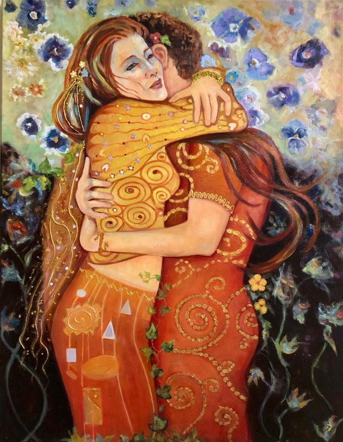
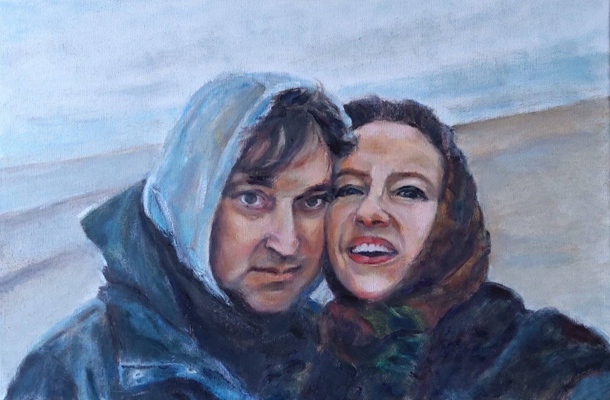
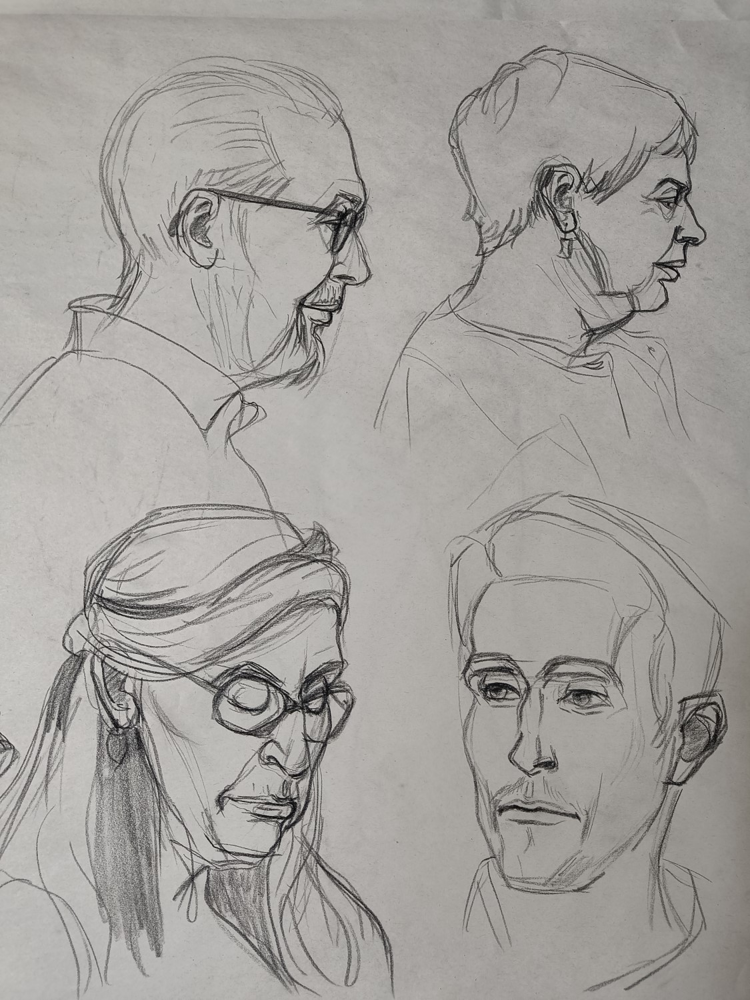
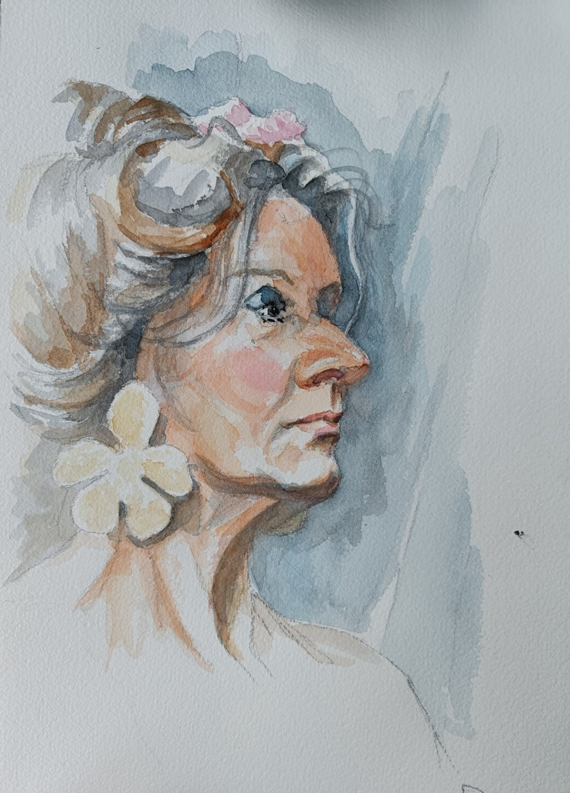
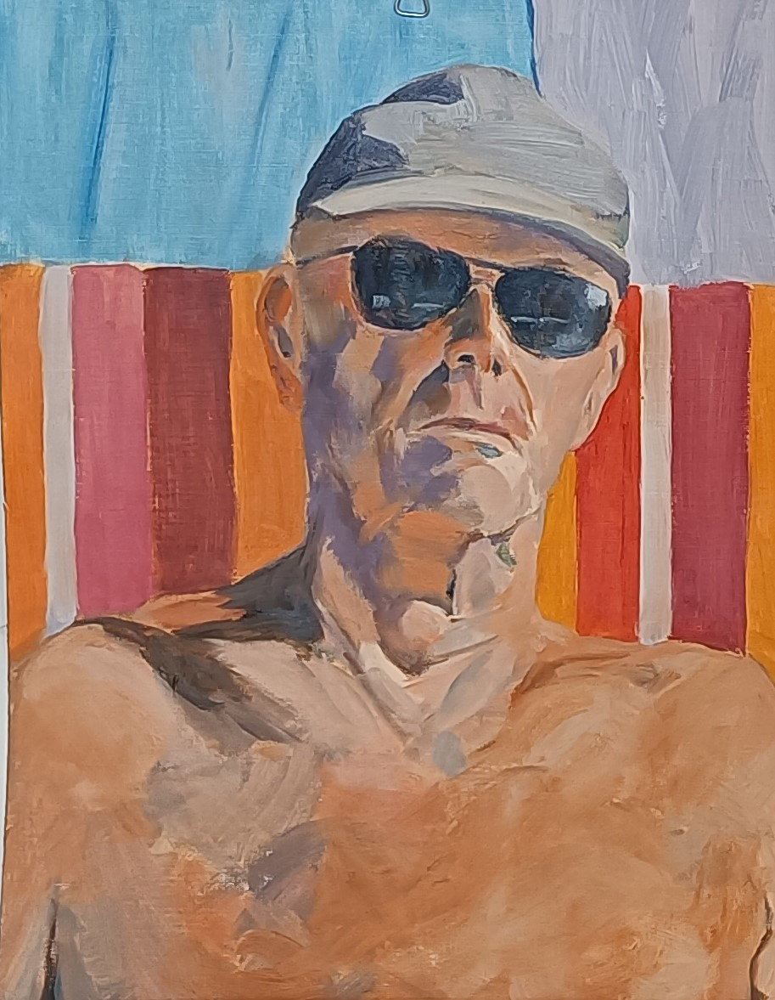
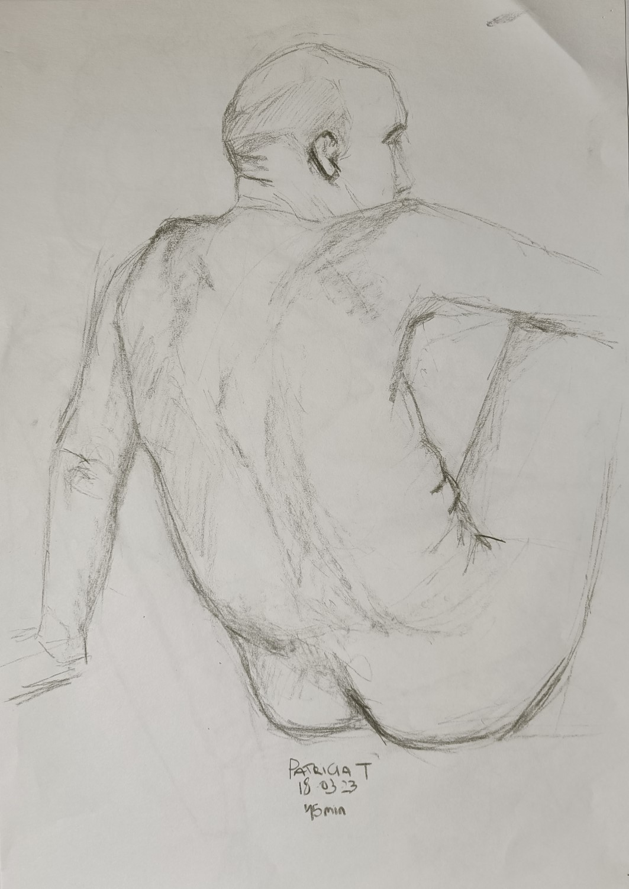
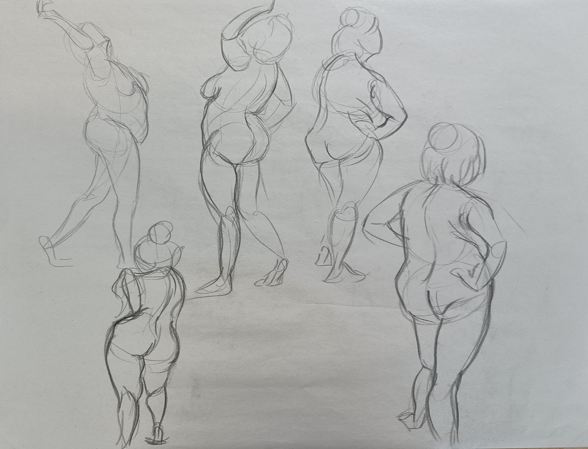
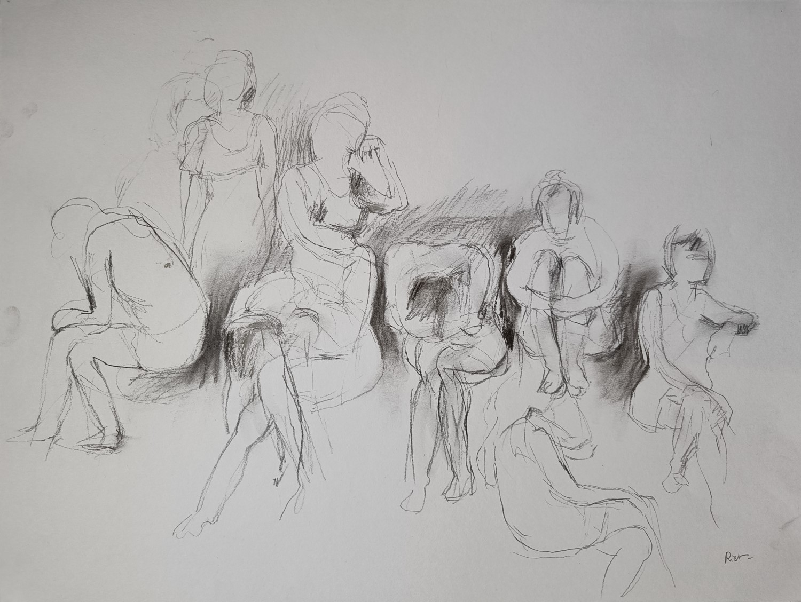

Beste kunstenaar,
Graag nodigen wij u uit om deel te nemen aan de activiteiten van het atelier voor het schooljaar 2025-2026. Bij ons vindt u een gezellige, creatieve omgeving met persoonlijke begeleiding.
Deelname
- Bij inschrijving kan u zowel op woensdag als zaterdag deelnemen.
- U mag beide dagen komen, één dag per week, of afwisselend (woensdag, week erop zaterdag, ...).
Open atelier (woensdag 9u–12u)
- Voor iedereen die zijn creatieve kunsten wil ontwikkelen: tekenen, schilderen, aquarel.
- Begeleiding is voorzien, maar zelfstandig werken kan ook.
- Samen schilderen werkt stimulerend in onze gezellige ruimte.
- Ideaal om vaardigheden uit zomerworkshops verder te oefenen.
Modelatelier (zaterdag 9u–12u)
- Tekenen of schilderen naar levend model.
- We starten met snelschetsen, daarna langere poses (afhankelijk van de groep).
- Begeleiding aanwezig, ook voor beginners.
- Liever vrij werken zoals in het open atelier? Dat kan ook.
- Opgelet: De eerste zaterdag van de maand is er geen atelier.
Inschrijven
Wenst u deel te nemen? Mail ons via info@kunstdroom.be — we antwoorden graag op al je vragen!
Over het open atelier
Het atelier streeft ernaar om jouw eigen mogelijkheden te laten ontdekken en een eigen praktijk-expertise uit te bouwen. We stimuleren je om jezelf te ontwikkelen als autonoom kunstenaar in een warme, gezellige omgeving.
Op woensdag breng je jouw eigen project mee waarmee je aan de slag wil. Dit kan een foto of een stilleven zijn dat je wil schilderen of tekenen. Tijdens dit artistiek proces word je persoonlijk begeleid waarbij experiment, overleg en besprekingen belangrijke elementen zijn.
De visies en benaderingen van de medestudenten uit verschillende disciplines zorgen voor een bredere kijk op kunst. Creativiteit staat voorop en zo wordt het open atelier een denklab.
Eén sessie duurt 3 uur, met één gezellige koffiepauze.




Tekenen of schilderen naar levend model




Het menselijk lichaam is een dankbaar onderwerp om weer te geven. Modeltekenen is de beste oefening om te leren tekenen wat je ziet en niet wat je denkt te zien!
Modelschilderen/tekenen vraagt veel concentratie en oefening — naast het aandachtig kijken naar het model, dien je ook te bepalen hoe je het model in de ruimte plaatst. Je houdt het overzicht op de compositie, de grote lijnen, de verhoudingen en de lichtval.
Onze ervaren modellen, zowel mannen als vrouwen, helpen je om anatomie en vormen te bestuderen en te beheersen.
Kom 10 minuten voor aanvang om je werkplaats in te richten. Eigen materiaal meebrengen.
Zaterdag — modelatelier




Op zaterdag starten we met drie korte oefeningen van 2–4–5 minuten om op te warmen. Vervolgens doen we poses van 10 of 20 minuten met de nodige pauzes ertussen.
Tijdens deze lessenreeks worden er verschillende methodes aangereikt om snel en resoluut de beweging van de figuur weer te geven. Daarbij is het ook belangrijk om krachtige, trefzekere lijnen te gebruiken. Om verder los te komen oefenen we met verschillende materialen.
De volgende lessen kan je oefenen en vrij tekenen of schilderen met materiaal naar keuze. Er zal begeleiding zijn, soms wordt er een oefening gegeven, maar deze zijn vrijblijvend.
Met het nodige respect kijken we naar het werk van onze collega's en leren we van elkaar.